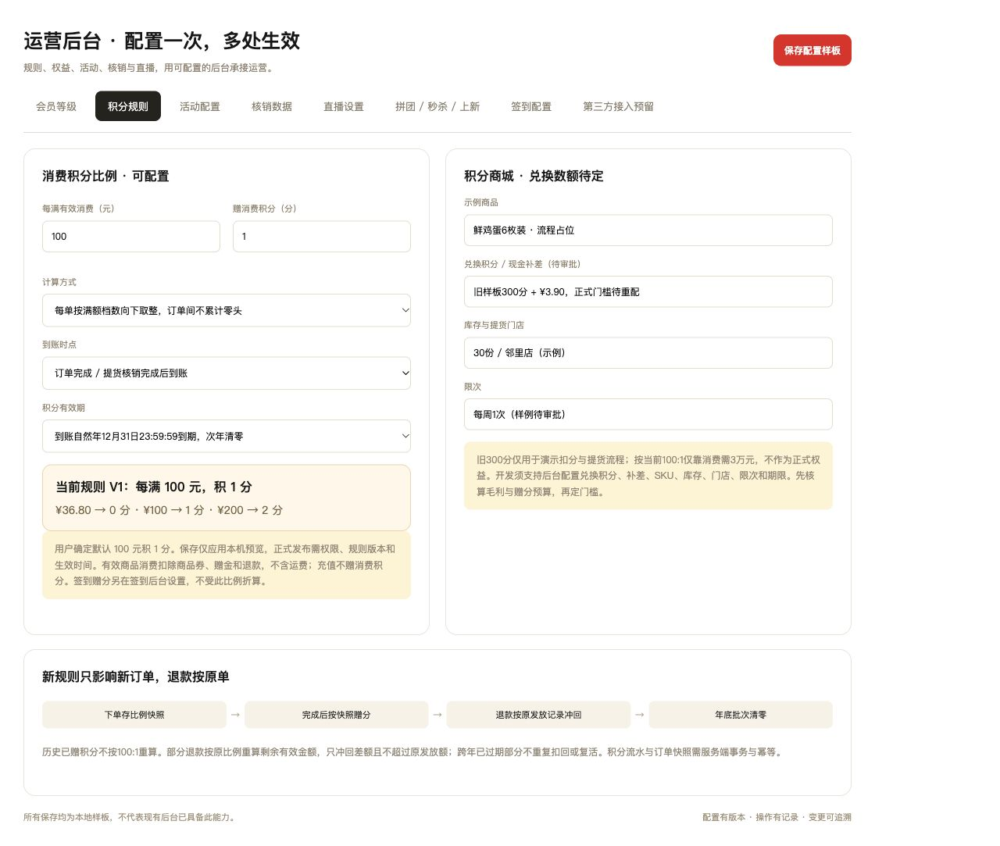

02 / 05 · 便民欢后台开发分步说明
消费积分、年度清零与兑换
当前确定比例：每满100元积1分。签到赠分独立配置。
原型与开发范围：保存只应用本机预览，真实规则发布、积分批次、任务、退款与资产事务由开发实现。兑换具体积分数额待审批，不把旧300分当正式权益。
后台布局 · 先配置规则，再配兑换商品

01 设置消费比例
每满有效消费 100元 → 1分；两项后台可改。每单向下取整，订单间不累计零头：99.99元0分、100元1分、200元2分。
02 设置到账与到期
完成订单或门店核销后到账。消费、签到及营销赠分均在到账当年12月31日23:59:59到期，次年清零可用正积分。
03 配置兑换与成本
兑换积分、现金补差、SKU、库存、门店、限次均留配置。旧300分+3.90元只演示流程；按100:1消费攒300分需3万元，门槛必须重新配套。
04 保留订单原快照
下单存比例版本，完成按原快照赠分；退款冲回原发放记录，部分退款只回退差额。跨年已过期批次不复活、不重复扣回。
开发验收：比例、账本和异常一起看
- 新36.80元、6.90元、3.90元订单均积0分；商品消费成长和完成单数照计。
- 修改比例只影响新订单；历史订单积分、退款和取消兑换仍追溯原快照。
- 签到赠分不按消费比例换算；重复签到、领奖或支付回调不重复发奖。
- 清零保留流水与批次；钱包本金/赠金和会员成长不随积分清零。
- 积分兑换锁分锁库存，支付失败/超时释放，提货只核销一次。